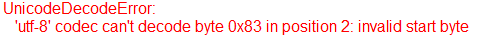

表示一维码读码结果，例如一维码读码工具的输出。
| 分类 | 接口名称 | 接口描述 |
|---|---|---|
| 构造 | GsSingleLinearCodeResult | GsSingleLinearCodeResult默认构造函数 |
| 属性 | lineSegResult | 条码所在的线段区域 |
| resultString | 解码字符串，即条码结果字符串 | |
| resultBytesString | 解码字符串，如果字符串中含有日文等编码，需要用该属性获取解码字符串 | |
| resultStringType | 解码字符串类型 | |
| resultIsLightOnDark | 是否是亮码暗背景 | |
| linearCodeType | 条码类型 | |
| orientation | 条码方向 | |
| symbolGrade | 条码等级 |
功能：构造GsSingleLinearCodeResult对象。
参数：无
返回值：无
功能：解码字符串，如果解码字符串类型为Mixed，JIS8，Kanji的话可能需要使用该属性获取解码字符串，或者使用resultString有类似下图错误产生时，就需要使用该属性。bytes类型类型，可读写。

说明：对于日文编码，可以使用” cp932”或” shift_jis”进行解码，例如：
strResult. decode(“shift_jis”)
无
无